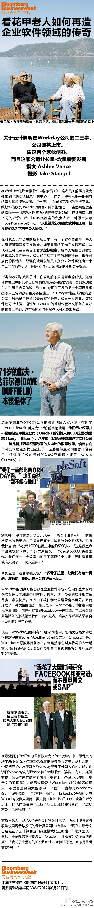

开发企业软件研究对象是Amazon 和 Facebook. //@段永朝://@刘兴亮: //@薛蛮子: 这老哥儿比我大十一岁，我还年轻呢！//@商业周刊中文版: “真正的奇迹不在于我完成了什么，而在于我有勇气开始。”——John Bingham @商周采编视觉推介:【生命不息，创业不止】71岁老年创业者让甲骨文颤抖，怎么做到的？——每个公司都有HR软件、费用申报软件，可绝大部分企业系统笨拙、繁琐。他瞄准这一点，开发出界面友好、如Facebook般易用的软件。想法简单，却颠覆了市场……难得的创业故事，送给中国创业者：生命不息，折腾不止。@李开复 @徐小平 